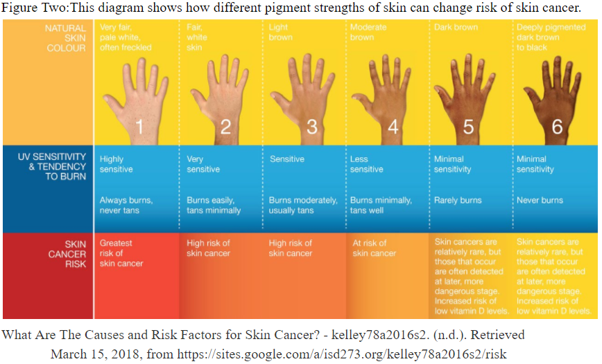

Definition
Slogan
Skin Cancer is not a shady topic.
Cancer
A disease caused by uncontrolled cell division of abnormal cells. All cancers basically have cells that divide at a much faster rate.
Skin Cancer
Skin cancer is The growth of abnormal skin cells because of exposure to UV radiation. There are two types of skin cancer, Melanomas and Basal cells. Melanomas are the most dangerous type of skin cancer. This type of skin cancer is caused by mutations in the DNA of the cells that creates skin pigment. Basal cells is the most common type of cancer and occurs on the outer part of the skin. Basal cells are mostly caused by large amounts of exposure to sun. Basal cells normally do not spread beyond their original area.
Causes
The number one cause of skin cancer is UV radiation. This can come from the sun and tanning beds. Other types of radiation like X-ray can also be a cause of skin cancer. Severe sunburns in adolescents and younger can cause melanoma in later life. Problems in your chromosomes can also cause skin cancer. You are more at risk of getting skin cancer the less pigment you have in your skin.

Prevention
- Seek shade between 10am-4pm
- Try not to get sunburn
- Don't go to tanning beds or tan in the sun
- Put on sunscreen, sun hats, and sun glasses.
Treatment
Cyrosurgery
Using liquid nitrogen to freeze the growth. “This freezes the tissue without requiring any cutting. It may cause a mild stinging sensation, but usually local anesthesia isn’t needed. Later, the lesion and surrounding frozen skin may blister or become crusted and fall off. Temporary redness and swelling can occur. Cryosurgery may cause a loss of pigment in the area treated. ”It is useful for nonmelanoma skin cancers.
Laser Surgery
A surgery that uses a laser to scrape of the outer layer of skin. It is used on the face and scalp. It might not draw blood and leaves little scaring. It is used for pre cancer cells and when other treatments fail.
Photodynamic therapy
This treatment uses light to remove the cancer. “To eliminate skin precancers or cancers, the physician applies a light-sensitizing agent to the lesions and the areas surrounding them. The patient waits for an hour or more to let this absorb into the skin. The doctor then uses a strong blue or red light or laser to activate these medicated areas. This selectively destroys lesions while causing minimal damage to surrounding healthy tissue. Some redness, pain, peeling, flaking and swelling can result. After the procedure, patients must strictly avoid sunlight for at least 48 hours, as UV exposure will increase activation of the medication and may cause severe sunburns.”This is used on “precancerous lesions called actinic keratoses (AKs) and superficial basal cell carcinomas (BCCs), with cure rates ranging between 70 and 90 percent for BCC. It can also be used for certain nodular BCCs and superficial forms of squamous cell carcinoma.” This is used on “precancerous lesions called actinic keratoses (AKs) and superficial basal cell carcinomas (BCCs), with cure rates ranging between 70 and 90 percent for BCC. It can also be used for certain nodular BCCs and superficial forms of squamous cell carcinoma.”
Radiation therapy
Targeting the growth with X-Rays to kill it off. It is used to kill of all types of cancer but needs to work with others to get rid of melanomas.